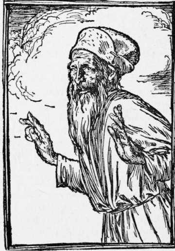

Giant Golden-Beard. Continued
Description
This section is from the book "Household Tales by Brothers Grimm", by Brothers Grimm. Also available from Amazon: Household Tales by Brothers Grimm.
Giant Golden-Beard. Continued
At last his way led him to the side of a great lake of water, over which he must pass. The ferryman soon began to ask, as the others had done, what was his trade, and what he knew. "Everything," said he. "Then," said the other, " pray tell me why I am forced for ever to ferry over this water, and have never been able to get my freedom; I will reward you handsomely." "Ferry me over," said the young man, "and I will tell you all about it as I come home."
When he had passed the water, he came to the wonderful cave. It looked very black and gloomy; but the wizard king was not at home, and his grandmother sat at the door in her easy chair. " What do you want ?" said she. " Three golden hairs from the giant's beard," answered he. "You will run a great risk," said she, "when he comes home; yet I will try what I can do for you." Then she changed him into an ant, and told him to hide himself in the folds of her cloak. " Very well," said he : " but I want also to know why the city fountain is dry; why the tree that bore golden apples is now leafless; and what it is that binds the ferryman to his post." "You seem fond of asking puzzling things," said the old dame; "but lie still, and listen to what the giant says when I pull the golden hairs, and perhaps you may learn what you want." Soon night set in, and the old gentleman came home. As soon as he entered he began to snuff up the air, and cried, "All is not right here: I smell man's flesh." Then he searched all round in vain, and the old dame scolded, and said, "Why should you turn everything topsy-turvy? I have just set all straight." Upon this he laid his head in her lap, and soon fell asleep. As soon as he began to snore, she seized one of the golden hairs of his beard and pulled it out. 11 Mercy! " cried he, starting up: " what are you about ?" " I had a dream that roused me," said she, "and in my trouble I seized hold of your hair. I dreamt that the fountain in the market-place of the city was become dry, and would give no water; what can be the cause?" "Ah! if they could find that out they would be glad," said the giant: " under a stone in the fountain sits a toad; when they kill him, it will flow again."
This said, he fell asleep, and the old lady pulled out another hair. "What would you be at?" cried he in a rage. " Don't be angry," said she, " I did it in my sleep; I dreamt that I was in a great kingdom a long way off, and that there was a beautiful tree there, that used to bear golden apples, but that now has not even a leaf upon it; what is the meaning of that?" "Aha! " said the giant, " they would like very well to know that. At the root of the tree a mouse is gnawing; if they were to kill him, the tree would bear golden apples again: if not, it will soon die. Now do let me sleep in peace; if you wake me again, you shall rue it."
Then he fell once more asleep; and when she heard him snore she pulled out the third golden hair, and the giant jumped up and threatened her sorely; but she soothed him, and said, "It was a very strange dream I had this time: methought I saw a ferryman, who was bound to ply backwards and forwards over a great lake, and could never find out how to set himself free; what is the charm that binds him ?" " A silly fool! " said the giant: " if he were to give the rudder into the hand of any passenger that came, he would find himself free, and the other would be forced to take his place. Now pray let me sleep."
In the morning the giant arose and went out; and the old woman gave the young man the three golden hairs, reminded him of the three answers, and sent him on his way.
He soon came to the ferryman, who knew him again, and asked for the answer which he had said he would give him. " Ferry me over first," said he, " and then I will tell you." When the boat reached the other side, he told him to give the rudder to the first passenger that came, and then he might run away as soon as he pleased. The next place that he came to was the city where the barren tree stood: "Kill the mouse," said he, " that is gnawing the tree's root, and you will have golden apples again." They gave him a rich gift for this news, and he journeyed on to the city where the fountain had dried up; and the guard asked him how to make the water flow. So he told them how to cure that mischief, and they thanked him, and gave him the two asses laden with gold.
And now at last this Luck's-child reached home, and his wife was very glad to see him, and to hear how well everything had gone with him. Then he gave the three golden hairs to the king, who could no longer deny him, though he was at heart quite as spiteful against his son-in-law as ever. The gold, however, astonished him, and when he saw all the treasure he cried out with joy, " My dear son, where did you find all this gold?" "By the side of a lake," said the youth, "where there is plenty more to be had." "Pray tell me where it lies," said the king, "that I may go and get some too." "As much as you please," replied the other. "You must set out and travel on and on, till you come to the shore of a great lake: there you will see a ferryman; let him carry you across, and when once you are over, you will see gold as plentiful as sand upon the shore."
Away went the greedy king; and when he came to the lake he beckoned to the ferryman, who gladly took him into his boat; and as soon as he was there gave the rudder into his hand and sprang ashore, leaving the old king to ferry away, as a reward for his craftiness and treachery.
And is his majesty plying there to this day ?" You may be sure of that, for nobody will trouble himself to take the rudder out of his hands.

Continue to:
- prev: Giant Golden-Beard
- Table of Contents
- next: Pee-Wit
Tags
fairy tales, children's stories, brothers grimm, household tales